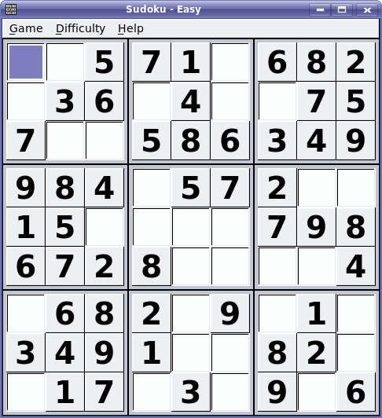
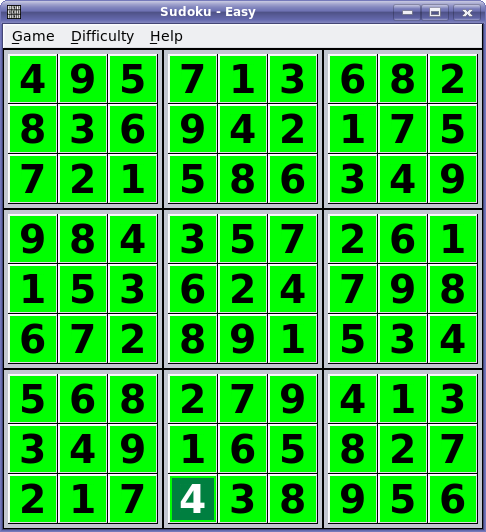
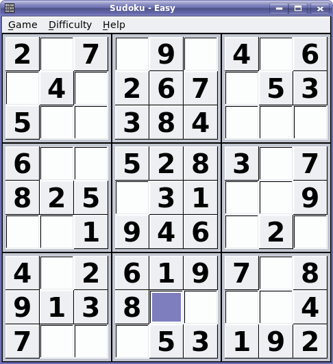
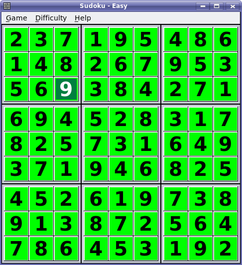

Due: Thursday 10/3/2013 by midnight. - Points: 30
Objectives:
Become familiar with the use of multidimensional arrays in Java.
Develop familiarity with using OOP in Java.
Description:
Write a program that solves
relatively simple Sudoku puzzles. Your implementation needs to
consist of a Sudoku class.
Input:
Similar to Project 4, you should read be able
to pass a text file path/name via command line to a program. The program
should then be able to read the data from the file by means of a Scanner
class instance. The input file will contain the initial Sudoku data with 0's
placed for the missing numbers. The data will be presented from the top
left of the table to bottom right.
Output:
The final results should be presented via the stdout in a matrix format (table format) similar to the input file structure.
Requirements: Your program should have a class Sudoku with the following specifications:
readData method - This method should be able to read data from a passed in file, storing it in a 2D array.
printData method - This method should be able to print the data stored in a 2D array to console in a format similar to that of the input file.
checkHorizontal method - This method should be able to step left-to-right across a 2D array, verifying that the numbers 1-9 appear exactly once each across that row. It may be a good idea to have this method return a boolean value, depending on your implementation.
checkVertical method - This method should be able to step top-to-bottom down a 2D array, verifying that the numbers 1-9 appear exactly once each in that column. It may be a good idea to have this method return a boolean value, depending on your implementation.
checkSection method - This method should be able to verify that the numbers 1-9 appear exactly once each within a specific 3x3 section of a 2D array. It may be a good idea to have this method return a boolean value, depending on your implementation. You may also wish to pass starting row and column index values into the method as parameters.
solve method - This method should be able to solve a given sudoku puzzle. It should also verify its solution by using the methods outlined above. It may help to reference Wikipedia for help with this problem.
Notes:
Make sure that your program tests for
convergence and does not get stuck in an infinite loop.
Sample puzzles:
Example1: Sample input for the following problem.
|
Input |
Output |
|
 |
 |
Example 2: Sample
input file for the follwoing problem.
|
Input |
Output |
|
 |
 |